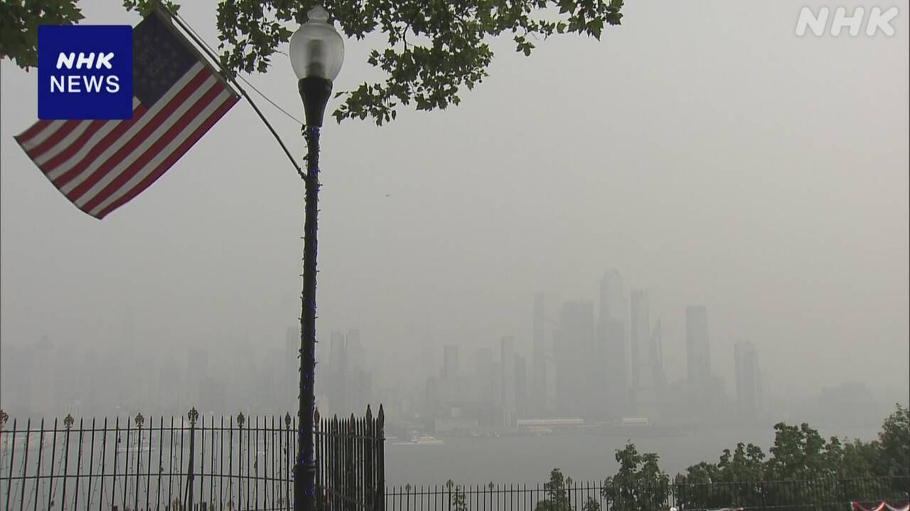
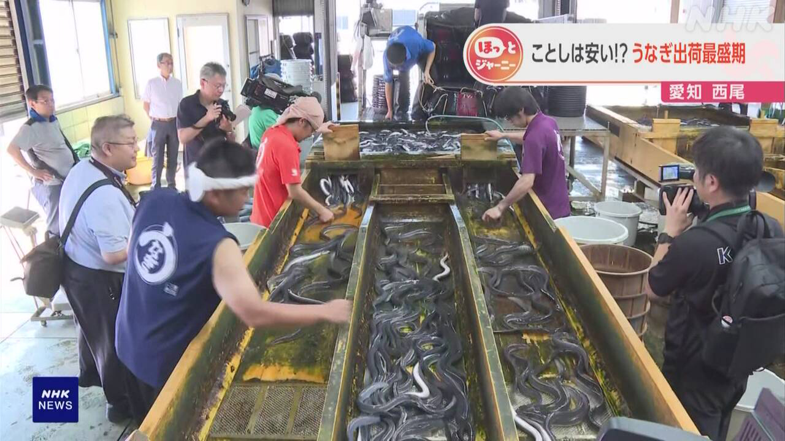

最新ニュース
1️⃣ 暑い日が続く 熱中症に気をつけて
17日も、いろいろな所で気温が上がりました。
高知県の四万十市西土佐で38.4℃になりました。京都市でも38℃になって、危険な暑さになりました。
気象庁によると、18日からの連休も暑くなりそうです。連休最後の20日からは、特に気温が上がりそうです。危険な暑さになる所があるかもしれません。
気温や湿度が高いと、家の中でも熱中症になることがあります。エアコンや扇風機を使って涼しくしましょう。外に出るときは、帽子や日傘を使ってください。そして、のどが乾いていなくても、水を飲んでください。たくさん汗が出たときは、塩分をとってください。
2️⃣ 「ニチレイ」 システムが動き始めた
サイバー攻撃を受けた「ニチレイ」で、システムが動き始めました。
冷凍食品の会社「ニチレイ」は、15日、「サイバー攻撃を受けた」と発表しました。
冷凍食品などを店に届けることができない問題が出ていました。ニチレイは、ほかの会社の冷凍食品を運ぶ仕事などもしています。このため、多くの会社が困っています。
ニチレイは、17日、システムが動き始めたと言いました。冷凍食品なども順番に運んでいます。そして、来週、全部の仕事が元に戻るように準備をしていると言っています。
3️⃣ カナダの山で火事 アメリカにも影響が出る

カナダのオンタリオ州では、暑さや雷などのため、山で火事がたくさん起こっています。
多くの人が避難しています。
火事の煙で空気が悪くなって、アメリカでも影響が出ています。ニューヨークでは、周りが見えにくくなっています。ニューヨーク市は、長い時間、外にいないようにと言っています。
ニューヨーク・ニュージャージースタジアムでは日本の時間で20日の朝、サッカーワールドカップの決勝があるので、心配する人がいます。
4️⃣ 26日は「土用のうしの日」 今年はうなぎが安くなりそう

今月26日は、「土用のうしの日」です。日本では、この日に、うなぎを食べる習慣があります。
愛知県の西尾市では、うなぎをたくさん育てています。16日は、40cmぐらいの大きさのうなぎが、漁協に集まっていました。
漁協によると、うなぎの子どもがたくさんとれたので、今年は、うなぎが安くなっています。
漁協の人は「多くの物は値段が上がっています。しかし、うなぎは去年より10％ぐらい安く買える店があると思います」と話していました。
- 〜ところ
- 〜になる
- 〜ても / 〜でも
- 〜から
- 〜によると
- 〜そうだ
- 〜がある / 〜がいる
- 〜かもしれない / 〜かもしれません
- 〜こと
- 〜ことがある
- 〜中
- 〜ましょう / 〜ましょうか
- 〜てください / 〜でください
- 〜ている / 〜でいる
- 〜なくて
- 〜など
- 〜ことができる
- 〜ため
- 〜ように
- 〜や〜など
- 〜にくい
- 〜ので
- 〜くらい / 〜ぐらい
- 〜と思う
- 〜より
vebaev.github.io
Generated: 2026-07-17 11:26:30 UTC